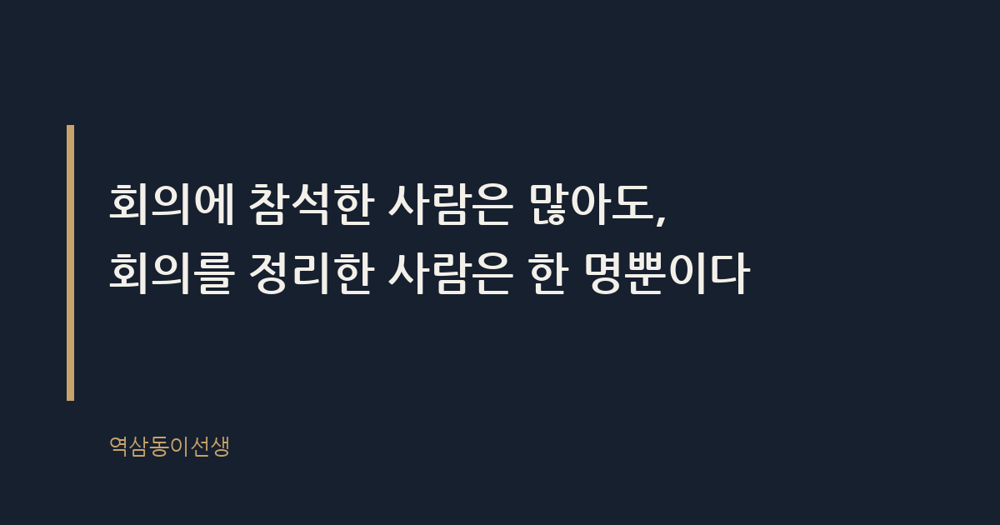
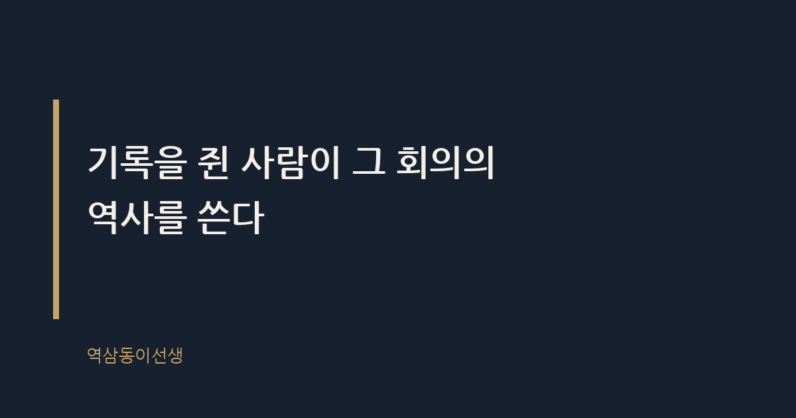

주제 회의록 한 줄로 존재감이 생기는 이유 (evergreen / office)
제목 후보
- 회의록 한 줄로 존재감 생기는 진짜 이유와 쓰는 법
핵심 키워드 '회의록'이 첫 3자에 위치, '쓰는 법' 검색 의도까지 결합해 도구형+에세이형 양쪽 유입 가능 - 회의록 쓰는 사람이 결국 신뢰받는 이유
'신뢰받는 이유'로 감성 검색어와 결합, 클릭률은 높으나 키워드 '회의록'이 앞쪽에 있어 AEO엔 1안보다 약함 - 회의록 한 줄로 평가받는 진짜 이유 알아보기
'평가받는'이라는 인사 관련 검색어 결합, 롱테일 유입에 유리하나 1안보다 포괄성 떨어짐
메타 설명 회의록 한 줄로 존재감이 생기는 이유를 구조적으로 분석하고, 바로 쓸 수 있는 회의록 한 줄 요약 예시까지 정리했다.
라벨 회의록작성법, 회의록예시, 직장인커뮤니케이션, 신입사원꿀팁, 보고의정석, 일잘러, 회의록한줄요약, 회의록쓰는법, 회의끝나고메모, 신뢰받는직장인, 인사평가팁
실용 자산 예시 문장 모음 — 회의록 한 줄 요약은 검색자가 바로 복사해 쓸 수 있는 문장 예시가 필요한 도구형 검색 의도라 좋은 예/나쁜 예 대비표를 넣었다
발행 전 팩트체크
- 조선왕조실록 사관 관련 역사적 비유는 일반 상식 수준으로 썼으나, 블로그 톤에 맞게 과장되지 않았는지 발행 전 재확인 필요
- 본문에 구체적 통계·수치를 쓰지 않았으므로 별도 수치 검증 항목 없음
이미지 (Blogger 편집기에 드래그해 넣으세요)

도입부 사진 · ⓒ RonaldCandonga / Pexels


회의록 한 줄로 존재감 생기는 진짜 이유와 쓰는 법
지난달 마케팅 회의가 한 시간 반 동안 이어졌다. 안건은 네 개였는데 결론은 하나도 제대로 안 났다. 다들 자기 할 말만 하고 자리를 떴다. 회의실에서 나오자마자 신입 사원 하나가 팀 메신저에 이렇게 올렸다. "오늘 회의 결론: 캠페인 런칭일은 다음 달 셋째 주로 확정, 예산안은 수요일까지 재검토." 딱 한 줄이었다. 근데 그 한 줄 때문에 그날 누가 무슨 말을 했는지는 다 잊혀도, 그 신입의 이름만은 또렷이 남았다.
회의록 한 줄로 존재감이 생기는 이유는 회의를 '정리한 사람'이 곧 그 회의를 기억하는 기준점이 되기 때문이다. 회의실엔 다섯 명이 있었지만, 그 회의를 요약할 권한을 가진 사람은 한 명이었다. 그리고 그 권한은 누가 준 게 아니라, 먼저 손 든 사람이 가져간 것이었다.
회의 끝나고 남는 건 결론이 아니라 '정리한 사람'
회의록이란 회의에서 오간 말을 받아 적은 문서가 아니라, 그 회의에서 무엇이 결정됐는지를 증명하는 유일한 문서다. 말은 휘발된다. 누가 무슨 뉘앙스로 말했는지는 다음 날이면 서로 다르게 기억한다. 하지만 메신저에 남은 한 줄은 다르다. 그 한 줄이 그날의 '공식 기록'이 된다.
많은 직장인이 회의록을 '귀찮은 잡무'로 여긴다. 틀린 생각은 아니다. 하지만 바로 그 생각 때문에 아무도 안 하려는 자리에, 누군가 먼저 발 들이면 눈에 띌 수밖에 없다. 회의실에서 가장 말을 많이 한 사람보다, 회의가 끝난 뒤 30초 안에 결론을 정리해 올린 사람이 더 오래 기억에 남는다. 이건 능력의 문제가 아니라 타이밍과 자리 선점의 문제다.
예전에 같이 일하던 브랜드팀 과장이 딱 그런 사람이었다. 회의 때는 말을 거의 안 했다. 그런데 회의실 문을 나서는 순간 이미 휴대폰으로 메신저 창을 열고 있었다. 엘리베이터 기다리는 10초 동안 엄지손가락으로 결론을 쳐서 올렸다. 나중에 그 사람한테 물어봤더니 "말할 타이밍은 놓쳐도 정리할 타이밍은 안 놓친다"고 했다. 그 말이 꽤 오래 기억에 남았다.
기록을 쥔 사람이 흐름을 쥔다
조선 시대 사관은 왕의 말 한마디도 빠짐없이 적었다. 왕이 사관의 기록을 마음대로 고치지 못했던 이유는 그 기록이 곧 역사로 남기 때문이었다. 회사도 비슷하다. 회의록을 쓰는 사람은 사실 가장 힘없는 자리처럼 보이지만, 동시에 그 회의의 '공식 버전'을 결정하는 사람이다.
직장에서 기억이 권력이 되는 이유는 사람들이 결정 자체보다 '누가 그 결정을 정리해 공유했는가'를 더 오래 기억하기 때문이다. 나중에 "그때 그거 어떻게 하기로 했죠?"라는 질문이 나오면, 다들 그 한 줄을 다시 찾아 올라간다. 그리고 그 메시지 보낸 사람 이름을 한 번 더 보게 된다. 회의에 참석한 사람은 많아도, 회의를 정리한 사람은 한 명뿐이다.
회의록, 언제 올려야 가장 효과적일까
타이밍이란 내용 못지않게 중요한 변수다. 회의가 끝나고 30분 안에 올라온 한 줄과, 다음 날 오전에 올라온 한 줄은 같은 내용이어도 체감 효과가 다르다. 전자는 "이 사람이 흐름을 바로 장악했다"는 인상을 주고, 후자는 그냥 '뒤늦은 숙제'처럼 보인다. 회의 직후, 다들 자리로 돌아가기 전이 가장 좋은 타이밍이다.
반대로 너무 빨리, 회의가 끝나기도 전에 요약을 올리면 역효과가 난다. 아직 결론이 안 났는데 단정적으로 적으면 "왜 멋대로 정리하냐"는 핀잔을 듣는다. 그래서 숙련된 사람들은 회의 막판, 누군가 "그럼 이렇게 정리하죠"라는 말이 나오는 순간을 놓치지 않고 받아 적는다. 그 한 문장이 나오는 타이밍을 캐치하는 감각, 그게 생각보다 훈련이 필요한 기술이다.
아무도 회의록을 먼저 쓰려 하지 않는 이유
회의록을 쓰기 싫어하는 이유는 명확하다. 책임이 따르기 때문이다. 내가 "A안으로 결정"이라고 적는 순간, 그게 틀리면 책임은 적은 사람한테 돌아온다. 그래서 다들 "누가 좀 정리해줬으면" 하고 눈치만 본다. 회의가 끝나면 다들 조용히 자리를 뜨고, 결국 막내나 신입이 떠안는 식으로 굴러가는 조직이 여전히 많다.
그런데 바로 그 책임을 지려는 사람이, 역설적으로 신뢰를 먼저 얻는다. 틀리면 "확인 부탁드립니다" 한마디 붙이면 된다. "틀릴까 봐" 안 쓰는 사람과 "틀려도 일단 정리하는" 사람 사이의 격차는 몇 달만 지나도 확연히 벌어진다. 후자는 "저 친구는 회의 때 뭘 들었는지 믿을 수 있다"는 평판을 얻고, 전자는 계속 존재감 없이 회의실 구석을 채운다.
한 번은 신입 두 명이 같은 팀에 들어왔는데, 한 명은 회의록을 매번 올렸고 다른 한 명은 한 번도 안 올렸다. 반년쯤 지나자 팀장이 중요한 외부 미팅에 누굴 데려갈지 고민할 때 자연스럽게 전자를 불렀다. 이유를 물었더니 "그 친구는 가서도 뭘 정리해 올 애"라고 했다. 업무 능력 차이가 아니라 그 작은 습관 하나가 만든 차이였다.
요즘은 AI가 회의록을 써준다는데, 그래도 되는 걸까
최근엔 녹음만 하면 AI가 자동으로 회의 내용을 받아 적어주는 도구가 많이 쓰인다. 발언을 빠짐없이 텍스트로 남기는 데는 분명 효율적이다. 하지만 AI가 못 하는 부분이 있다. 바로 '이건 결정이고 저건 그냥 의견이었다'를 가려내는 판단이다. 회의 중 나온 말 열 마디 중에 진짜 결론은 한두 마디뿐인데, 그걸 골라내는 안목은 여전히 사람 몫이다.
그래서 요즘 일 잘하는 사람들은 AI가 뽑아준 긴 녹취록을 그대로 공유하지 않는다. 그 녹취록을 다시 읽고 자기 언어로 한 줄을 뽑아 올린다. 도구는 속도를 줄여주지만, '무엇이 중요한가'를 가려내는 감각까지 대신해주진 않는다. 오히려 AI 시대일수록 이 요약 감각을 가진 사람이 더 희소해진다.
회의록 한 줄 쓰는 법 — 좋은 예와 나쁜 예
한 줄 요약이란 회의에서 나온 여러 발언 중 '결정된 것'과 '담당자', '기한'만 남기고 나머지는 과감히 버리는 작업이다. 길게 쓸수록 안 읽힌다. 짧을수록 권위가 생긴다. 아래는 현장에서 바로 써먹을 수 있는 상황별 예시다.
| 상황 |
이렇게 쓴다 |
이건 피한다 |
| 결론 없이 회의가 끝났을 때 |
"오늘 결론: A안으로 진행, 세부 일정은 금요일까지 공유" |
"오늘 다들 수고하셨습니다!" |
| 의견이 갈렸을 때 |
"A안 3명, B안 2명, 최종 결정은 팀장 재가 후 공지" |
"다양한 의견이 오갔습니다" |
| 담당자가 정해졌을 때 |
"예산안 재검토 — 담당 김OO, 기한 수요일" |
"예산 관련해서는 추후 논의하기로 함" |
| 다음 회의 일정이 나왔을 때 |
"다음 회의: 10/23(목) 2시, 안건은 캠페인 최종안" |
"다음에 또 얘기하기로 함" |
인사 시즌에 들은 말 — "그 친구는 정리가 돼"
인사평가 시즌에 팀장들이 모여 다음 승진자를 얘기하는 자리에 몇 번 앉아본 적이 있다. 업무 실적 얘기가 한참 오가다가, 꼭 이런 말이 나온다. "그 친구는 회의 때 정리를 잘해. 믿음이 가." 이게 성과표에 찍히는 숫자는 아니다. 하지만 그 말 한마디가 그 사람의 다음 보직, 다음 프로젝트 배정에 조용히 영향을 준다.
회의록 한 줄은 작아 보이지만, 실은 그 사람이 '회의의 핵심을 파악하는 사람'이라는 신호를 반복해서 쌓는 일이다. 매번 거창한 기획안을 내지 않아도, 매번 발표를 잘하지 않아도, 이 한 줄을 꾸준히 올리는 사람은 "일머리 있다"는 평판을 소리 없이 쌓아간다. 조직은 생각보다 작은 신호를 오래 기억한다.
정리하는 사람에게 생기는 뜻밖의 권한
회의록을 계속 쓰다 보면 생각지 못한 권한이 하나 생긴다. 바로 다음 회의 안건을 정하는 발언권이다. "지난번에 이렇게 정리됐었는데, 오늘은 거기서부터 이어가면 될까요?"라는 한마디는, 회의의 시작점을 그 사람이 제시하는 셈이다. 말을 많이 하지 않고도 회의의 방향을 슬쩍 쥐게 되는 구조다.
이건 거창한 권력이 아니다. 다만 매번 '지난 기록'을 쥐고 있는 사람이 자연스럽게 다음 논의의 기준점이 된다는 것, 그 작은 반복이 결국 회의실 안에서의 위치를 바꿔놓는다.
그 한 줄, 아무나 못 쓰는 이유
한 줄 요약이 쉬워 보이지만 막상 해보면 어렵다. 회의 내용을 제대로 듣지 않으면 뭐가 결정이고 뭐가 그냥 의견이었는지 구분이 안 된다. 그러니 이 한 줄을 잘 쓰는 사람은 사실 회의 내내 가장 집중해서 듣고 있었던 사람이다. 말을 제일 많이 한 사람이 아니라, 제일 정확히 들은 사람이 그 한 줄을 쓸 자격을 얻는다.
씁쓸하면서도 꽤 인상적인 지점이 여기 있다. 회의에서 존재감을 드러내는 가장 확실한 방법이, 역설적으로 말을 아끼고 끝까지 듣는 일이라는 것. 떠드는 사람은 잊혀도, 정리하는 사람은 남는다.
Q. 회의 끝나고 한 줄 정리를 올렸더니 다음부터 그 일이 당연히 내 몫이 된 적, 저만 있는 건 아니죠?